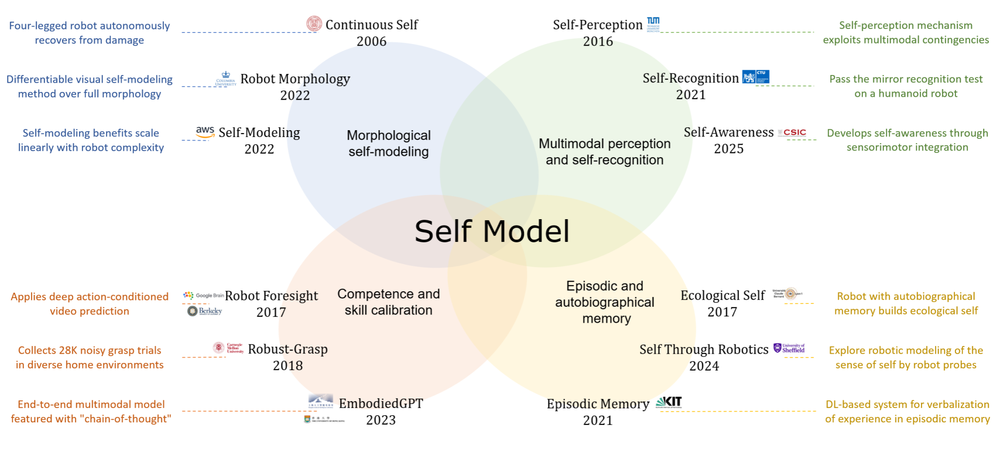
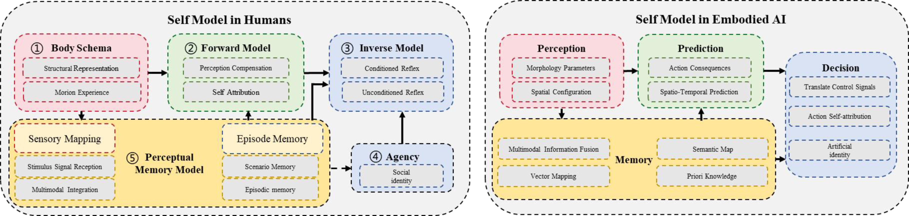
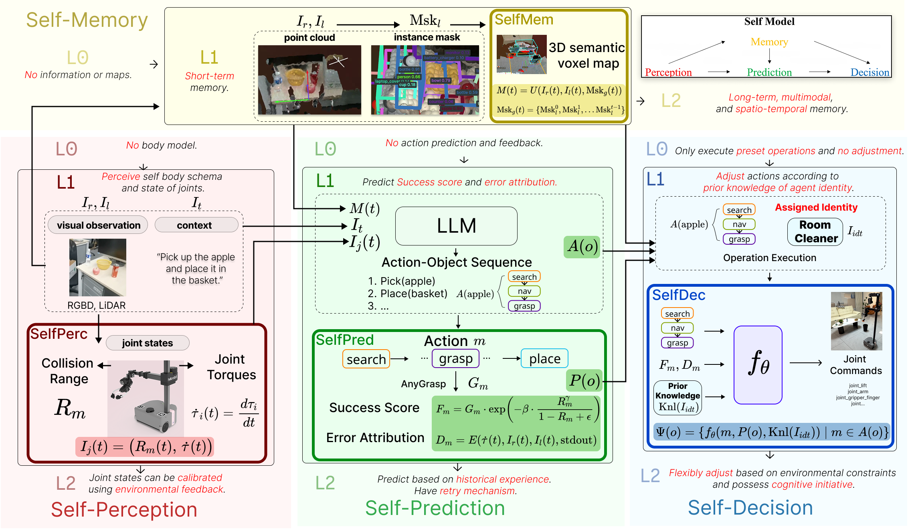

Self Model for Embodied Artificial Intelligence
Abstract
This paper presents a systematic formulation of the Self Model for embodied artificial intelligence, aiming to provide the missing internal representation that enables an agent to understand its own body, capabilities, memories, and decision processes. Unlike existing approaches that address isolated aspects such as perception, prediction, or skill adaptation, we propose a unified computational framework that integrates body schema, forward and inverse models, perceptual memory mechanisms, and agency. This framework captures how an embodied agent represents its physical structure, predicts the consequences of its actions, selects policies, and accumulates experiences to form a coherent sense of self. We further introduce a six-level hierarchy (L0-L5) that characterizes the developmental stages of self model from non-self representation to full self awareness, providing the first operational taxonomy for evaluating self-awareness in embodied artificial intelligence systems. A practical implementation is developed and validated in manipulation and navigation tasks, demonstrating improved prediction, adaptation, memory, and decision-making capabilities. Overall, this work establishes the conceptual foundation and technical pathway for building self model in embodied intelligence. It highlights their significance for achieving autonomy, robustness, long-horizon reasoning, and lifelong evolution in real-world environments.
Introduction
Embodied artificial intelligence requires more than just environmental understanding—it demands that agents develop an internal awareness of their own bodies, capabilities, and decision processes. While existing approaches have explored isolated aspects of "self" such as perception, prediction, memory, or adaptation, they remain fragmented and lack a holistic computational foundation.
We introduce the Self Model, a unified internal representation that integrates four core self-related capabilities: self-perception (awareness of body and state), self-prediction (anticipation of action outcomes), self-memory (temporal continuity of experiences), and self-decision (goal-directed policy selection). This framework provides embodied agents with a coherent sense of self, enabling them to reason not only about the external world but also about themselves—their actions, limitations, and consequences.
Drawing inspiration from human self-awareness theories in cognitive science, our work establishes the conceptual foundation and technical pathway for building self-aware embodied systems that are more autonomous, adaptive, and capable of long-horizon reasoning in real-world environments.

Self Model
In cognitive science, the human self model arises from five core mechanisms: body schema (spatial self‑representation), forward model (action outcome prediction), inverse model (goal‑to‑motor mapping), agency (self‑attribution of actions), and perceptual‑memory model (integration of experiences over time). These mechanisms collectively enable a coherent sense of self.
For embodied AI, we reorganize these biological foundations into four implementation‑oriented modules:
• Perception instantiates the body schema, providing real‑time awareness of joint states, morphology, and collision risks.
• Memory implements the perceptual‑memory model, constructing a 3D semantic self‑map that records the agent’s spatial and experiential history.
• Prediction operationalizes the forward model, using large language models to forecast action success and diagnose failures.
• Decision integrates the inverse model and agency, translating goals into executable actions while adapting strategies based on predicted outcomes and self‑identity.
These modules form a closed loop: perception feeds memory and prediction; prediction informs decision; execution feedback updates perception and memory. This perception–memory–prediction–decision cycle enables continuous self‑calibration, giving embodied agents a dynamic, adaptive sense of self that underpins robust autonomy in complex environments.

Self Model Hierarchy
To systematically characterize the developmental stages of self-awareness in embodied AI, we propose a six-level hierarchy (L0–L5):
| L0 | L1 | L2 | L3 | L4 | L5 | |
|---|---|---|---|---|---|---|
| (No Self Model) | (Basic Self-Awareness) | (Basic Self-Adaptation) | (Socialized Self) | (Sustained Self-Evolution) | (Full Self-Awareness) | |
| Core Feature | Stimulus-response | Static physical self | Dynamic self-env coupling |
Multi-agent and social-aware |
Value-Oriented iteration |
Meaning construction |
| Memory | No self-related memory | Short-term | Multimodal episodic | Social/role memory | Autobiographical and metacognitive |
Narrative social |
| Perception | No body model | Static body | Calibrated body | Social-context self | Self-monitoring | Physio-cognitive integration |
| Prediction | No external prediction | Context-bound | Generalized causal | Role/interaction | Long-horizon and counterfactual |
Worldview-level long-term |
| Decision | Fixed preset actions | Local heuristics | Adaptive goal-action | Role-conditioned | Value-guided | Hierarchical and ethical |
This hierarchy provides the first operational taxonomy for evaluating self-modeling capabilities across perception, memory, prediction, and decision, offering a unified benchmark for progress toward autonomous, self-aware embodied systems.
Instantiation and Results
We instantiate an L1-level self model on a Stretch robot to validate its core components. The perception module computes real-time collision risk using a geometric body model and joint torque analysis. The memory module builds a 3D semantic voxel self-map that accumulates observations across episodes. The prediction module leverages a large language model to forecast grasp success and attribute failures. The decision module adapts actions based on predicted outcomes and an explicit self-identity (e.g., a "cleaner" role with task-specific priors).

Ablation studies were conducted on each module. Results show that self-perception significantly enhances obstacle avoidance, reducing collisions and human interventions. Self-memory substantially improves navigation performance within a single episode, with cross-episode map reuse yielding further gains. Introducing self-prediction optimizes manipulation success, while self-decision, by integrating identity information, effectively raises overall task completion.
Comparisons with methods such as OVMM, OK-Robot, and ManipGen demonstrate that our full L1 model achieves superior performance across stages including object finding, grasping, and placement. These results confirm that a unified self model significantly enhances an agent's autonomy and adaptability in real-world tasks.
Self-perception ablation demo
Self-memory ablation demo
Self-prediction ablation demo
Self-decision ablation demo
Long-Horizon Autonomous Cleaning Demonstration
BibTeX
@article{JCST2026,
title={Self Model for Embodied Artificial Intelligence} ,
author={Shuqiang Jiang, Sixian Zhang, Shida Tao, Xihong Zhu, Tianliang Qi, Xinhang Song},
journal={Journal of Computer Science and Technology},
year={2026},
url={https://doi.org/10.1007/s11390-026-0000-0}
}